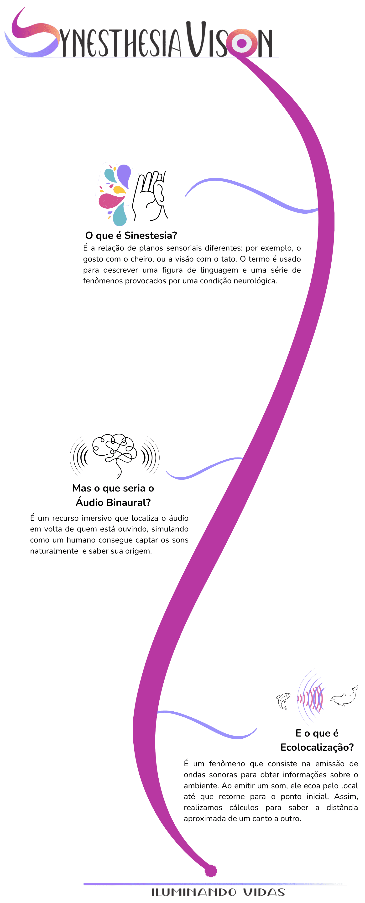

Pensando nessa situação, os
Óculos Sensoriais para Cegos - Synesthesia Vision
buscam proporcionar ao cego autonomia e segurança no seu deslocamento, através do desenvolvimento de uma tecnologia, que é complementar às bengalas, tornando assim sua experiência de vida mais independente e confortável.
A bengala é a tecnologia assistiva mais utilizada pelos cegos por ser segura, barata e também sinalizadora da cegueira. Porém...
Ela tem uma limitação:
Não conseguir localizar obstáculos acima da linha
da cintura.

Diante de tudo isso, buscamos investigar o uso da ecolocalização e do som binaural como princípios para o desenvolvimento de óculos sensoriais que possibilitem uma espécie de visão sinestésica do mundo, ou seja, que permita que a audição seja os olhos de um cego.
Ecolocalização?
Som Binaural?
Sinestesia?
Nos acompanhe abaixo e entenda os conceitos que inspiraram o projeto!
Um Histórico da Nossa Evolução
Tivemos até então 3 fases.

Conheça a Equipe Visionária por Trás
Coordenadores do projeto
Bolsistas colaboradores do projeto

Allamy
Estudante de ADS

Caroline
Estudante de ADS

Estevão
Estudante de Mecânica
Felipe
Estudante de Eletrônica

Isaque
Estudante de Eletrônica

Jailson
Estudante de Eletrônica

Michael
Estudante de ???

Ryan
Estudante de ???